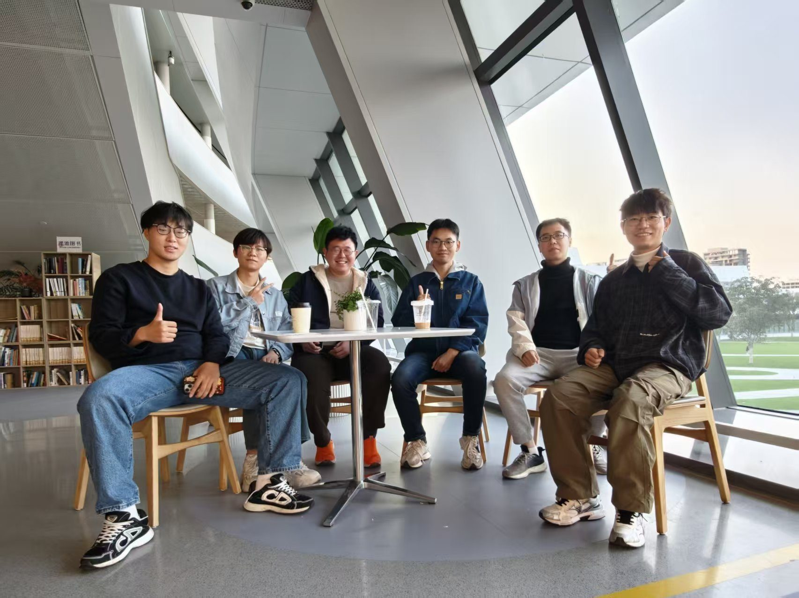

以好奇为起点
从 AI4S 到数字分身，从模型能力到 AI 意识，让讨论跨越学科边界。
聚集热爱 AI 与交叉科学的同学，在交流学习中探索前沿，推动潜在的科学发现与技术创新。

西湖大学 AI 交叉科学社以「AI 交叉科学 / 爱交叉科学」为主题，聚集热爱人工智能与交叉科学的同学。
社团提供交流与讨论、了解与学习相关领域知识和前沿研究的平台与机会，期待在不同学科的交会处，促进潜在的科学发现与技术创新。
从 AI4S 到数字分身，从模型能力到 AI 意识，让讨论跨越学科边界。
以平等、开放的小组讨论，让不同背景的成员自由表达，建立长久的同伴关系。
通过工具交流、创业分享与活动组织，把对技术的关注带到真实问题中。